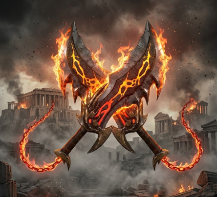
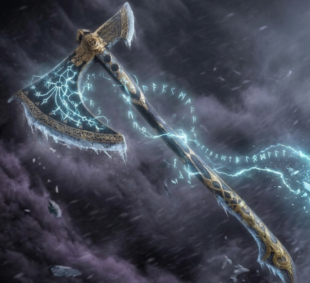

De general espartano à matador de deuses
A Ascensão e Queda do Fantasma de Esparta
O Recomeço em Midgard
Os mortais, divindades e criaturas que moldaram a jornada de Kratos
Cada arma conta uma história de sangue, traição e poder

Forjadas nas chamas do Tártaro pelo próprio Ares, as Lâminas do Caos foram acorrentadas aos pulsos de Kratos como símbolo de sua servidão. Mesmo após conquistar a liberdade, elas permaneceram — uma cicatriz permanente de seu passado. Retornam na era nórdica como as armas mais poderosas de Kratos quando ele abraça sua fúria novamente.

Forjado pelos anões Brok e Sindri usando o mesmo metal de Mjolnir, o Machado Leviatã foi presente de Faye para Kratos. Encantado com o gelo de Jötunheim, ele pode ser arremessado e invocado de volta à mão de Kratos como um bumerangue mortal. É o símbolo da nova fase de Kratos: controlada, poderosa e ligada à família.
Espada divina de Zeus, usada em GoW2. Única arma capaz de matar deuses e titãs. Kratos a usa para se matar e liberar a Esperança em GoW3.
GoW 2 · GoW 3Espada pesada presenteada por Artemis em GoW1. Primeiro upgrade de arma da franquia — mais lenta que as Lâminas, mas devastadora contra grupos de inimigos.
GoW 1Retiradas do próprio Hades após derrotá-lo em GoW3. Permitem puxar a alma dos inimigos e são usadas nos punhos de Kratos como arma de combate corpo a corpo.
GoW 3Obtido após derrotar Posêidon em GoW1. Permite a Kratos respirar e se mover livremente debaixo d'água — essencial para explorar os abismos aquáticos do jogo.
GoW 1 · GoW 2Em Ragnarök, Kratos recebe do anão Durlin a Lança Draupnir — forjada de um anel que se multiplica. Pode ser cravada em superfícies e detonada, criando explosões em cadeia.
RagnarökVersão aprimorada das Lâminas do Caos em Ghost of Sparta. Reforjadas com magia olímpica, possuem maior alcance e poder elemental, refletindo a nova posição de Kratos como Deus da Guerra.
Ghost of SpartaO que os deuses não queriam que você soubesse
O God of War original de 2005 redefiniu o gênero de action-adventure. A câmera fixa inspirada em Shadow of Colossus, os combates fluidos e a narrativa épica criaram um template que toda a indústria seguiu por uma década.
Santa Monica Studio, 2005O designer David Jaffe se inspirou no mito de Hércules — um semideus que mata sua família em fúria divina e parte numa jornada de redenção — para criar o arco emocional de Kratos.
A batalha inicial de GoW3, com Kratos escalando o Olimpo sobre Gaia enquanto os Titãs avançam, levou mais de um ano só de produção. É considerada uma das cenas de abertura mais épicas da história dos games.
Após GoW3, a equipe testou múltiplas direções para a série, incluindo uma Kratos feminina e uma aventura no Egito. O diretor Cory Barlog apostou no arco do pai e filho — e criou o maior sucesso crítico da franquia em 2018, com 94 no Metacritic.
GDC Talk — Cory Barlog, 2019Cópias vendidas de God of War (2018) e Ragnarök combinados — os dois jogos mais vendidos da história da Sony Santa Monica.
O ator Christopher Judge (voz de Kratos) improvisou várias falas marcantes do jogo, incluindo alguns dos momentos mais emotivos entre Kratos e Atreus. A equipe manteve vários takes improvisados no produto final.
God of War (2018) é filmado inteiramente em um único plano-sequência sem cortes visíveis — algo inédito em jogos desse escopo. O diretor de fotografia foi contratado especialmente para planejar cada transição de cena como cinema ao vivo.
Game Informer, 2018As pinturas de Jötunheim no GoW2018 mostram a jornada inteira de Kratos e Atreus, incluindo eventos de Ragnarök. Faye, sendo uma gigante, tinha acesso às profecias e preparou tudo com décadas de antecedência.
God of War Ragnarök foi desenvolvido durante a pandemia de COVID-19, com grande parte da equipe trabalhando remotamente. Mesmo assim, entregou mais de 40h de conteúdo, 11 reinos visitáveis e uma das narrativas mais complexas da história dos videogames.
Santa Monica Studio Dev Diary, 2022Prêmios conquistados por God of War Ragnarök em 2022, incluindo Jogo do Ano no The Game Awards, tornando-se um dos jogos mais premiados da história.